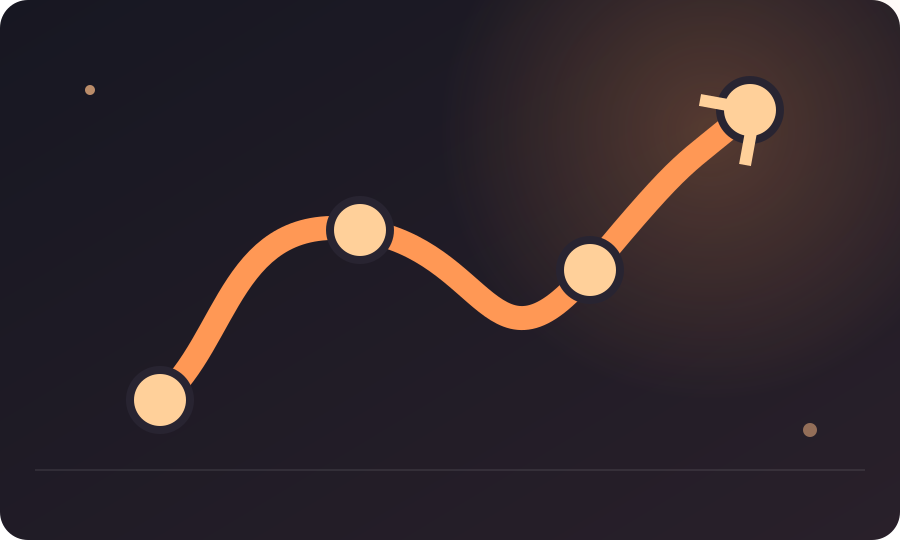

METAS Y PRODUCTIVIDAD
Cómo crear un plan para alcanzar un objetivo
Cómo convertir una meta en una secuencia de pasos, dependencias, fechas de revisión y un plan alternativo para los días en que las cosas no salen como esperabas.

RECURSO VISUAL · METAS 4
Cronograma de un plan que puede adaptarse
Los hitos, las dependencias y las revisiones hacen visible el recorrido sin fingir que todo será lineal.
Un plan útil no predice el futuro. Reduce incertidumbre suficiente para que sepas qué hacer después. Muchos planes fallan porque describen solamente la ruta ideal: si todo sale bien, haces A, luego B y luego C. La vida añade retrasos, errores, cambios de prioridad y días con menos energía.
Empieza por el resultado y trabaja hacia atrás
Escribe qué debe existir al final. Después pregunta qué tiene que estar listo justo antes y qué depende de ello. Repite hasta llegar a una primera acción.
Trabajar hacia atrás revela dependencias que una lista lineal suele ocultar.
Distingue pasos de dependencias
Un paso es algo que haces. Una dependencia es algo que debe ocurrir antes para que el siguiente paso sea posible. Si necesitas una aprobación, información o herramienta, debe aparecer en el plan.
Ignorar dependencias produce planes que parecen rápidos en papel y se bloquean en la práctica.
Pon fechas de revisión, no solo una fecha final
La fecha final importa, pero las revisiones intermedias permiten descubrir temprano que el plan está mal. Define puntos donde comprobarás avance y decidirás si mantienes, reduces o cambias la ruta.
Diseña dos rutas
Ruta A: condiciones normales. Ruta B: si falta tiempo, dinero, energía o información. La ruta B no es pesimismo; es una forma de evitar que un obstáculo convierta una semana difícil en abandono total.
Por ejemplo, si no puedes hacer una sesión completa, la alternativa puede ser completar la parte crítica y mover el resto a la siguiente revisión.
Caso: preparar un lanzamiento
Una persona planea publicar un pequeño curso. Su lista dice “grabar, editar, publicar”. Al revisar dependencias descubre que necesita definir temario, preparar ejemplos, probar el audio y tener una página de inscripción. El nuevo plan tarda más en papel, pero elimina bloqueos que antes habrían aparecido el día del lanzamiento.
La prueba del plan
Entrega tu plan a una persona que no conoce el proyecto y pídele que te diga qué haría mañana. Si no puede identificar la siguiente acción, el plan todavía es demasiado abstracto.
El plan necesita puntos de decisión
No todos los pasos deben estar definidos con el mismo nivel de detalle. Lo importante es saber dónde aparecerán decisiones nuevas. Si después de una prueba debes elegir entre dos rutas, marca ese punto en el plan y define qué información necesitas para decidir.
Esto evita un error frecuente: confundir una lista de tareas con un plan. Una lista dice qué hacer. Un plan también dice cuándo revisar, qué señales indican que una ruta no funciona y qué decisión tomas entonces.
Al revisar tu plan, busca frases como “si todo sale bien”. Cada una puede esconder una dependencia o una incertidumbre. No necesitas resolverla por completo; necesitas decidir cómo la observarás.
El plan también debe decir cuándo dejar de insistir
Una ruta alternativa no sirve solo para retrasos. También debe incluir una señal de salida. Si una prueba falla tres veces, si el costo supera un límite o si aparece información que cambia el objetivo, quizá sea momento de revisar la estrategia.
Definir estas señales antes del momento crítico evita que el orgullo se convierta en criterio. Puedes decidir de antemano qué evidencia te hará cambiar de ruta y qué evidencia justifica un intento más.
Un plan maduro no es una línea recta hacia el objetivo. Es un conjunto de decisiones condicionadas por lo que vas aprendiendo. Eso lo hace más parecido a la vida real y menos parecido a una promesa imposible.
Qué revisar cada viernes
Una revisión breve puede incluir cuatro preguntas: ¿qué paso se completó?, ¿qué dependencia apareció?, ¿qué supuesto resultó falso?, ¿qué decisión toca ahora? Con esas respuestas puedes actualizar el plan sin rehacerlo desde cero.
La revisión semanal también protege contra el piloto automático. Un plan que nunca cambia aunque la realidad haya cambiado no es disciplina: es falta de revisión.
Un plan debe poder sobrevivir a una mala semana
Haz una prueba extrema pero razonable: imagina que pierdes dos días. ¿Qué parte del plan sigue siendo viable? Si la respuesta es ninguna, necesitas una ruta mínima. Un plan resistente conserva el objetivo aunque cambie el volumen de trabajo.
La revisión no es un trámite
Una revisión útil puede cambiar el plan. Si nunca cambia nada, quizá solo estás confirmando lo que ya pensabas. Busca una pregunta que pueda obligarte a elegir: ¿qué paso ya no tiene sentido?, ¿qué dependencia apareció?, ¿qué supuesto dejó de ser cierto? La revisión existe para actualizar la ruta, no para decorarla.
Incluye dependencias, revisiones y una ruta alternativa. Eso hace que el plan sea resistente, no perfecto.
RUTA DE DEPENDENCIAS
Descubre qué paso desbloquea el siguiente
Un plan no es solo una lista: algunos pasos dependen de otros.
Tu ruta aparecerá aquí.
Los planes se vuelven frágiles cuando cada paso presupone que el anterior salió perfecto. Añade un margen entre etapas y decide qué harás si un requisito no está disponible. Una ruta alternativa puede ser pedir información, reducir alcance o cambiar el orden, no necesariamente trabajar más horas.
COMPRUEBA LO QUE TE LLEVAS
Estas preguntas no buscan ponerte una nota. Sirven para comprobar si la idea central del artículo quedó clara y, sobre todo, para decidir qué hacer después.
1. ¿Qué ayuda a descubrir dependencias?
2. ¿Para qué sirve una ruta B?
3. ¿Qué prueba revela si el plan es suficientemente concreto?
¿Quieres llevar una idea a la práctica? Prueba el Reto de 7 días de IMPULSO o crea tu Ruta de crecimiento para convertir una reflexión en una acción concreta.
← VOLVER A IMPULSO